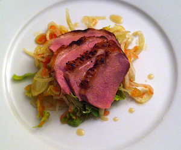

Barbarie Entenbrust auf Grapefruit-Fenchelsalat
5 von 6Die eingeschnittene Entenbrust je 3 Minuten (auf der Fettseite zuerst) anbraten. Im vorgeheizten Ofen ca. 30 Minuten auf den Punkt garen. Den Fenchel hauchdünn tranchieren und die Grapefruit filetieren, beides in eine Salatschüssel geben. Eine Sauce aus Olivenöl, frischem Ingwer, Salz und Pfeffer, etwas Obstessig sowie wenig Honig beigeben, vermengen. Die Ente tranchieren und auf dem Salat anrichten.
